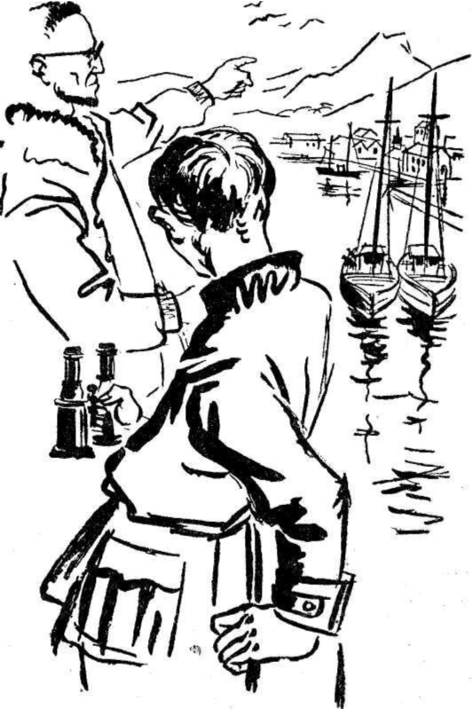

Hareketimizden bir gün önce, bir dostumuz bize üç tavsiye mektubu verdi. Birincisi İzlanda Valisi kont Trampe'a, ikincisi piskopos muavini Mösyö Pictursson'a, üçüncüsü Reykjawik belediye reisi Mösyö Finsen'e yazılmıştı.
Ayın 2 sinde, sabah saat altıda, eşyalarımızın hepsi gemiye yüklendi. Kaptan bizi kamaralarımıza götürdü. Bunlar, son derece dardılar.
Dayım:
- Rüzgâr uygun esiyor mu? diye sordu. Kaptan Bjarne:
- Mükemmel, diye cevap verdi. Limandan, bütün yelkenlerimizi açarak çıkacağız.
Bu konuşmadan bir kaç saniye sonra, kaptanın söylediği gibi bütün yelkenler fora edilmiş olarak limandan ayrıldık. Sund Boğazına süratle girdik. Bir saat sonra Kopenhag sahilleri gözden kayboldu.
Valkyrie, ince yapılı bir yelkenliydi. İzlanda’nın başkenti Reykjawik'e kömür, malzemesi, toprak eşya, yün giyim eşyası ve buğday götürüyordu. Hepsi Danimarkalı olan beş tayfa gemiyi idare ediyordu.

Dayım, kaptana:
- Yolculuk ne kadar sürer acaba? diye sordu.
- Aksi yönden rüzgâr esmezse on günde İzlanda’ya ulaşmış oluruz...
Kaptanın sözleri doğru çıktı. Oldukça kuvvetli bir fırtınanın önüne katılan Valkyrie, on gün sonra İzlanda kıyılarına ulaştı. Skagen burnundaki deniz feneri göründüğü zaman, tehlikeli kayalara bindirmememiz için bir kılavuz gemisi bizi yedeğine aldı. Üç saat sonra da, Faxa körfezine girdik. Reykjawik'in önünde demirledik.
Yolculuğun bittiğini öğrenen dayım kamarasından, sapsarı bir yüzle dışarı çıktı. Deniz tutmuş olmasına rağmen, neşesinden hiçbir şey kaybetmemişti. Daracık kamara ona, bütün yolculuk boyunca bir hapishane gibi görünmüştü. Sıkıntılı günlerden sonra, gemiyi terk etmek için acele ediyordu. Buna rağmen, karaya çıkmadan önce beni geminin burnuna götürdü. Körfezin kuzeyinden yükselen, sivri iki tepeli bir dağı eliyle işaret ederek:
- İşte Sneffels! dedi.
Sonra, yolculuğumuzun hedefi hakkında hiç kimseye bir şey bahsetmememi katî olarak bir defa daha hatırlattı ve bizi bekleyen sandala doğru yürüdü. Çok geçmeden rıhtıma ayak bastık.
İlk olarak gözümüze, general elbisesi giymiş bir adam çarptı. Bu resmî kıyafetli şahıs, adanın valisi kont Trampe'di. Dayım, daha ilk bakışta valiyle karşı karşıya olduğunu anladı. Kendini tanıttıktan sonra, tavsiye mektubunu verdi ve Danimarka lisanıyla konuşmağa başladılar. Bu konuşmadan bir kelime bile anlamadığımı söylemek zorundayım. Mamafih dayım en sonunda durumu açıkladı. Kont Trampe bize her türlü yardım yapmayı vadediyordu.
Daha sonra belediye başkanı Mösyö Finsen'i ziyaret ettik. O da askerî kıyafetliydi. Bize aşırı bir yakınlık gösterdi.
Piskopos muavini Mösyö Pictursson'u yerinde bulamadık. Adanın kuzeyinde bir vazife seyahati yapıyordu. Böylece, onunla tanışma ümidini tamamıyla kaybetmiş oluyorduk. Buna karşılık, bize daha faydalı olacak birisiyle tanıştık. Mösyö Fridriksson,
Reykjawik lisesinde tabiî ilimler profesörüydü.
Profesör Fridriksson Islands lisanıyla Latinceden başka bir şey bilmiyordu. Bana Horace'ın lisanıyla hitap ederek, dost olmak istediğini söyledi. Daha ilk anda da kaldığımız müddet içinde ondan başkasıyla arkadaşlık yapamadım.
Profesör Fridriksson, üç odalı bir evde oturuyordu. Bunların ikisini bize verdi. Çokluğu bakımından ada halkını hayrette bırakan eşyalarımızı profesörün evine taşıyarak, yerleştik.
Kendimize sığınacak emin bir yer bulduktan sonra dayım:
- En önemli ve en zor meseleleri halletmiş bulunuyoruz, dedi.
Hayretle:
- En önemlileri ve en zorları mı? diye sordum.
- Gayet tabiî... Artık kraterden aşağıya inmekten başka yapılacak bir işimiz kalmadı...
- Bunu en basit iş olarak kabul ediyorsanız, söyleyecek hiçbir sözüm yok... Fakat, indikten sonra, yukarı çıkmamız icap ettiğini de unutmamalıyız, değil mi?
- Bu beni düşündürmüyor. Boşu boşuna vakit kaybetmeyelim. Şehir kütüphanesine gideceğim. Belki Saknussemme'in yazmış olduğu el yazısı kitaplardan birkaçını bulabilirim. Bunları tetkik etmek istiyorum.
- Ben de bu zaman içinde şehri gezerim. Siz de arzu etmiyor musunuz?
- Bana göre burada en önemli olan şeyler yerin üstünde değil, yerin altında bulunuyor.
Bu konuşmadan sonra, dışarı çıktım. Gelişi güzel dolaşmağa başladım.
Reykjawik'de yol şaşırmak imkânsız bir şeydi. Bu sebeple hiç kimseye, gideceğim yerler hakkında sual sormadım.
Şehir, iki tepe arasında, denizden oldukça aşağıda bataklık bir arazide inşa edilmişti. Bir tarafı, akmış olan lâvlarla kaplıydı. Bu kısım, denize kadar tatlı bir meyille iniyordu. Diğer taraftan ise, kuzeyi Sneffels'le kapanmış olan Faxa körfezi uzanıyordu. Körfezde Valkyrie'den başka gemi yoktu. Genel olarak, İngiliz ve Fransız balıkçı gemileri, körfezin biraz açığında demir atarlarmış. Bu gemiler o anda adanın doğu sahillerindeymiş.
Üç saat içinde şehri ve dolaylarını gezdim. Genel görünüşü hüzün vericiydi. Ağaç veya başka bitkiye rastlamak imkânsızdı. Her adımda eskimiş lâv yığınlarına rastlanıyordu. İrlandalıların kulübeleri toprak ve turbadan yapılmıştı. Uzaktan bakıldığı zaman yere bırakılmış çatı yığınları gibi görünüyorlardı. Bitkiler, evlerin içlerinde yetişiyorlardı. Mevsim gelince hasat yapılıyordu.
Uzunca bir gezintiden sonra geriye döndüğüm zaman, dayımı ev sahibiyle sohbet eder bir halde buldum.
Dayım, Arne Saknussemm'in yazmış olduğu eserlerden hiçbirisini bulamamıştı. Bunun sebebi gayet basitti. Kutsal inançlara aykırı hareket ettiği ileri sürülerek mahkûm edilen büyük bilginin değerli eserleri 1573 yılında, Kopenhag'da yakılmıştı.
Dayımın o günkü sohbetinden en önemli tarafı Profesör Fridriksson'un bize Danimarkalı lisanını çok iyi konuşan bir kılavuz sağlamayı vadetmiş olmasıydı.